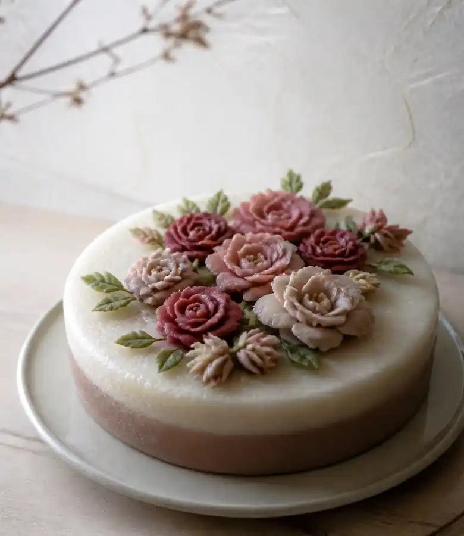
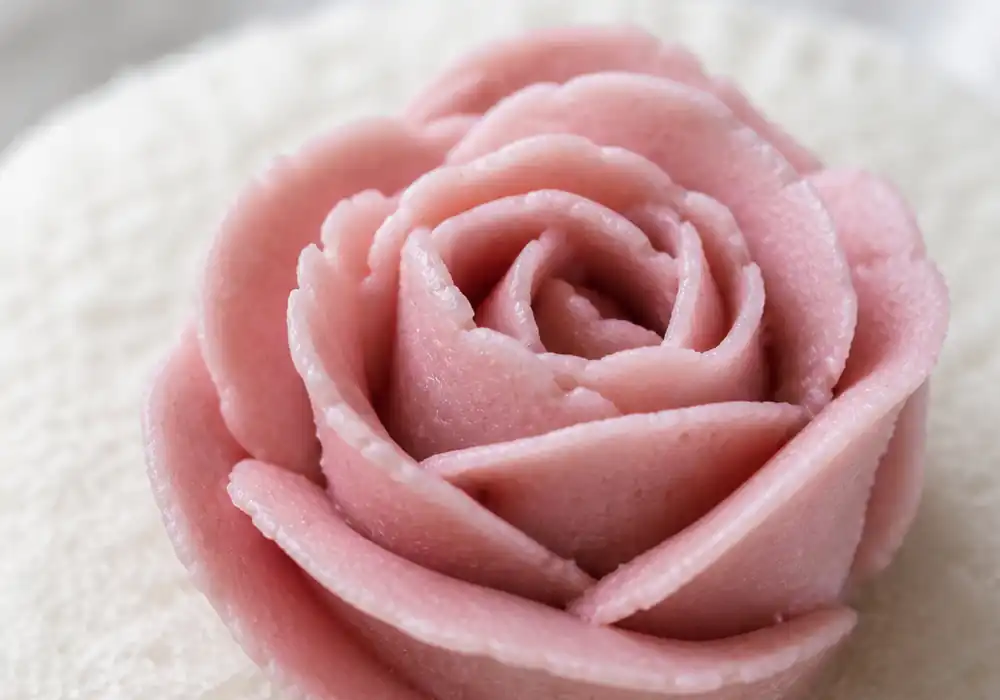
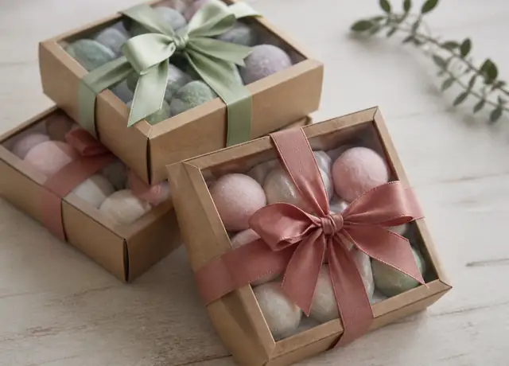
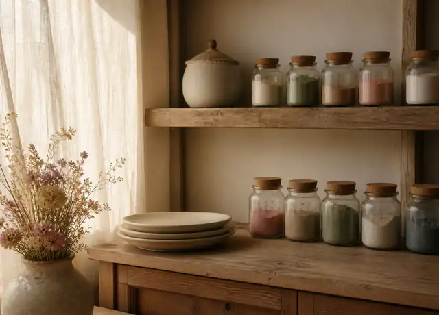
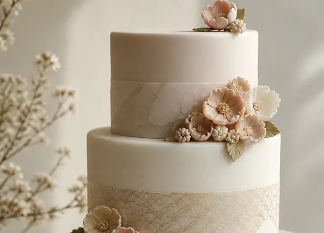
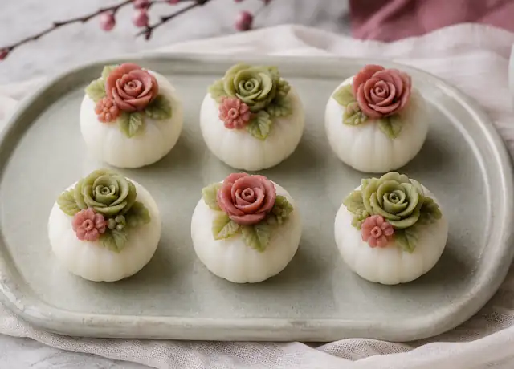
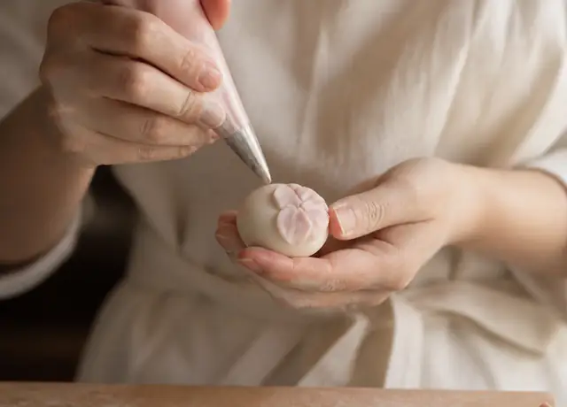
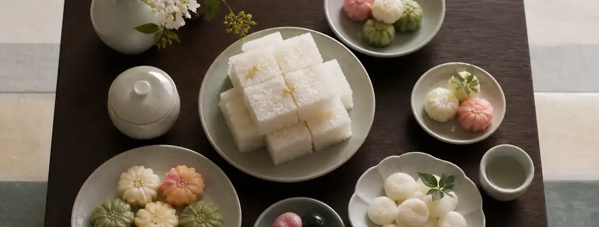
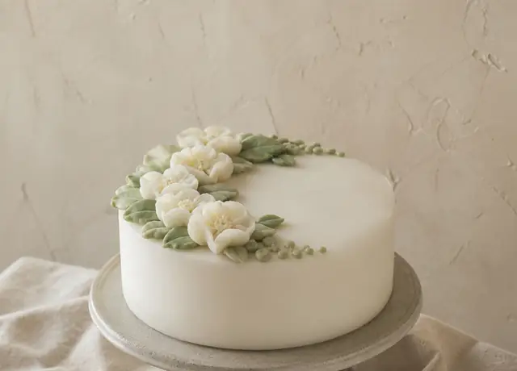

A 세트
110,000
- 백설기 9조각
- 수수팥떡 30알
- 송편 꽃 1 · 잎 1 · 원형 38
SINCE 2021 · 경기 양주 덕계
유기농 멥쌀과 유기농 설탕만으로 빚은 앙금플라워 떡케이크. 백일·돌·상견례·명절까지, 날짜에 맞춰 손으로 하나씩 준비합니다.

국내산 유기농 멥쌀을 매장에서 불리고 빻아 그날 사용합니다.
인공 첨가제 없이 유기농 설탕으로 은은하게 단맛을 냅니다.
앙금을 짜서 만드는 꽃 장식. 같은 디자인도 조금씩 다릅니다.
생크림 대신 떡과 앙금으로 만든 케이크입니다. 원하는 꽃 색 두 가지만 알려주시면 그 하루에 맞춰 준비합니다.

케이크 사이즈는 틀 기준입니다. 쪄낸 뒤 수축으로 1cm 정도 차이가 날 수 있습니다.
백일·첫돌·칠순·상견례 상에 올리는 한 상. 백설기와 수수팥떡, 송편 구성을 세트로 준비했습니다.
110,000
110,000
120,000
115,000
문구·패턴 1단은 百·백일·첫돌·두돌·생신·칠순·상견례 등에서, 2단은 토끼·용·스마일·꽃·카네이션 중에서 고르시면 됩니다. 라벨 스티커로 9글자까지 문구 제작이 가능합니다.
결혼식·돌잔치 답례, 회사·명절 선물까지. 구성과 수량에 맞춰 상자를 꾸립니다. 구성 사진을 보내주시면 상담이 빠릅니다.

답례떡 가격은 구성·수량에 따라 달라집니다 · 카카오톡으로 문의
100% 예약제로 운영합니다. 결제 순서로 예약이 마감되니, 날짜가 정해졌다면 먼저 알려주세요.
카카오톡 채널이나 인스타그램 DM으로 날짜와 용도, 사이즈를 알려주세요.
주문서를 작성해 보내주시면 결제 순으로 예약이 확정됩니다.
픽업일에 맞춰 쌀을 불리고 빻아 당일 손으로 만듭니다.
투명박스와 리본, 성냥칼까지 챙겨 드립니다. 초와 하판 문구도 함께요.
아래 항목을 채워 카카오톡 채널로 보내주세요.
직접 앙금꽃을 짜서 나만의 떡케이크를 만들어 가는 수업입니다. 원데이 클래스와 단체 수업을 운영하고 있습니다.
일정과 수강료는 매장 확인이 필요합니다 · 클래스 문의하기
계절과 용도에 따라 달라지는 앙플로의 떡케이크.






※ 갤러리 이미지는 인스타그램 @en_fleur_cake 의 작품 분위기를 참고해 만든 예시 이미지입니다. 실제 제작 시 매장 사진으로 교체됩니다.
덕계역에서 도보 20분. 매장 앞에 주차할 수 있습니다.
약도는 위치를 이해하기 위한 간략한 그림입니다. 정확한 길 안내는 지도 앱을 이용해 주세요.